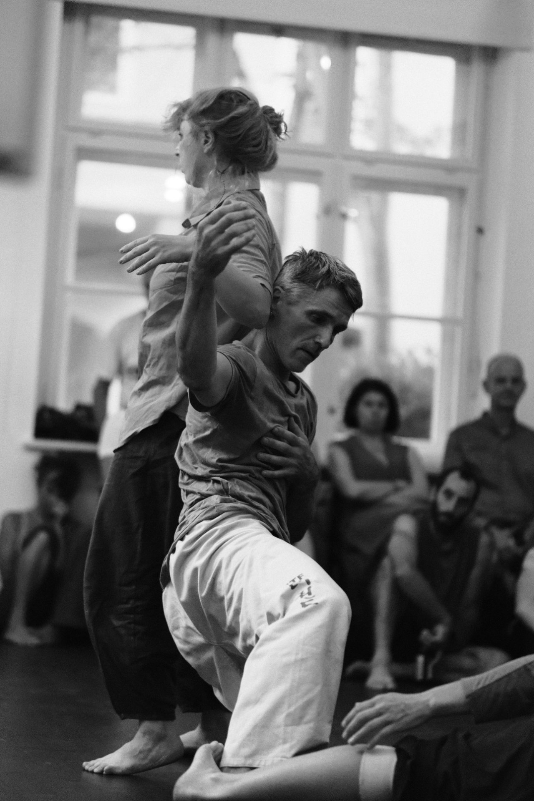
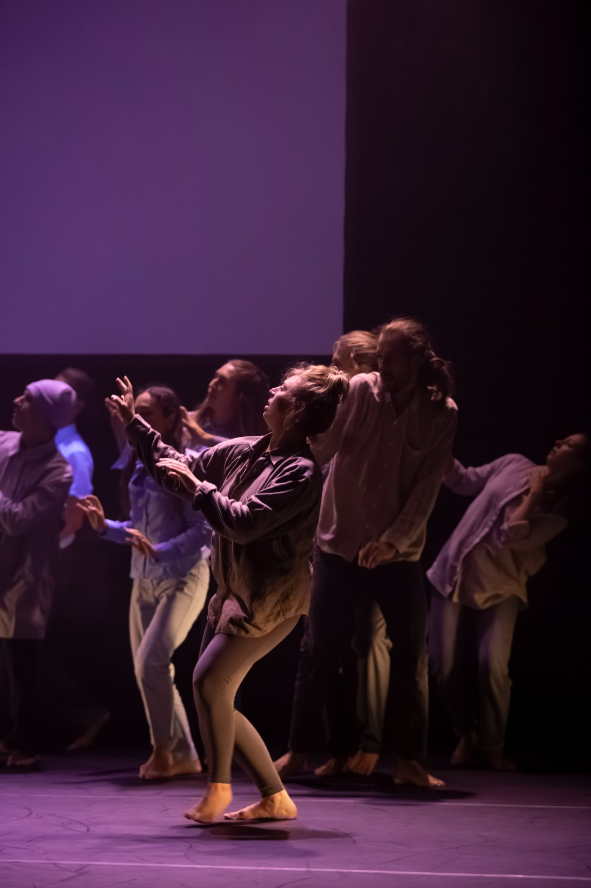
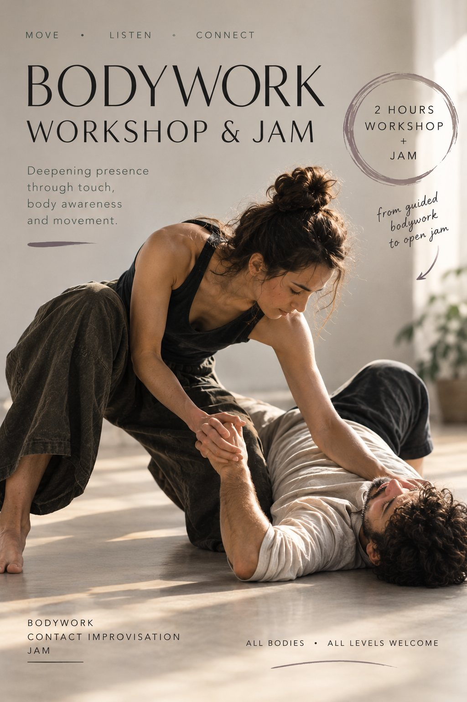

Noise of the body - Movement Laboratory
For the past six months I have been working on an artistic research project on sound and the body in contact improvisation. Together with a group of dancers, we asked: what is the sound of a body? We looked at it in a poetic sense: an abstract inner sound, the sound of the soul, the sound of physics, of something falling. We explored how these sounds meet and shape the dialogue between two bodies in movement.
We drew on existing literature, among others The Embodied Mind by Varela, Thompson and Rosch, and then decided to go a little further than what we found in the articles and books, into territory that is still open.
This laboratory is an open door into that research. You will try some of the tasks and questions we worked with and experience the material yourself. No special preparation is needed. Everyone is welcome, whether you are an experienced dancer or simply curious.
I am deeply grateful to everyone who took part in this research. Your time, openness and curiosity shaped it.
Please save the date. I look forward to seeing you there. 🤍
Tamara
Schedule: December 19
Time: 10:30 - 13:30
Venue: Falkstrasse 26, Innsbruck 6020
Group size: Minimum 6 participants per class
Free donation from 5 euros.
Come and dance

Contemporary dance workshop
Take a break from the holiday season and spend two hours moving with Tamara Maksymenko! This workshop is open to all levels, whether you're a beginner or already have dance experience.
We'll learn new movement material and link it into a short phrase, then explore improvisation to find your own way of moving. A big focus is music and musicality: how to listen with the body, play with rhythm and dynamics, and let the music shape the movement.
Expect two hours of active, joyful dancing to shake off the festive stillness and get energised before the new year.
No experience needed. Just bring comfortable clothes and the wish to move.
Schedule: Tuesday, December 29
Time: 18:00 - 20:00
Venue: USI - big room. Fürstenweg 185, 6020 Innsbruck
Group size: Minimum 6 participants per class
20 € per class + 3 € transaction and tax fees/ 25 € per class + 3 € transaction and tax fees
Contact: Tamara Maksymenko: +43 677 630 275 06 - Whatsapp/Signal/Telegram

Body Work — Weekly Classes in Innsbruck
Body Work
Body Work is a gentle, guided movement practice rooted in contact improvisation and somatic traditions. It is a calm, unhurried way of exploring the body: through slow movement, breath, weight and natural contact with others.
Each class lasts two hours. We begin by arriving and tuning in, then move through simple guided explorations, alone and in contact with others. There is no choreography and no right or wrong. I guide the structure and explain each exercise, so you always know what we are doing and can stay within your own comfort. You don’t need a partner or any previous experience. Contact and connection emerge naturally within the group.
After class, the space stays open. Depending on our mood and energy, the time can turn into a relaxed movement jam, or simply into tea and conversation. You are welcome to stay for as long as you like, or to go home when the class ends.
Many people describe Body Work as softer and less hierarchical than other body practices, yet it leaves a deep sense of ease in both body and mind. It is open to everyone: dancers, non-dancers, couples, families and anyone curious about their own body. Just show up.
Schedule: Weekend day, Saturday or Sundays
Time: Start 10:00 - End 12:00 - Jam 12:00-13:00/ Startd 17:15 - End 19:15, probably JAM.
Venue: USI - big room. Fürstenweg 185, 6020 Innsbruck
Group size: Minimum 6 participants per class
November: 22
December: 20
20 € per class + 3 € transaction and tax fees/ 25 € per class + 3 € transaction and tax fees
Should a class need to be cancelled for any reason, the session will either be rescheduled at a time that works for everyone, or the amount for the class (20 or 25) cost will return to you.
Full season registration is open now. Single attendance by contacting Tamara Maksymenko: +43 677 630 275 06